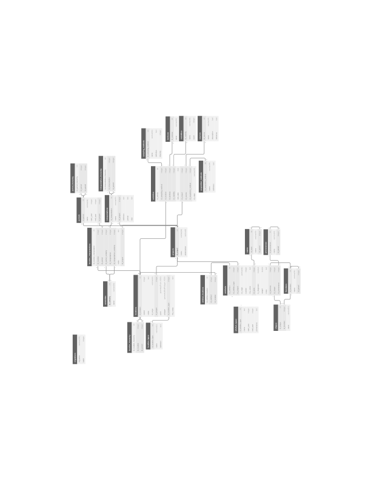

<!DOCTYPE html>
<html lang="en">
  <head>
    <meta charset="utf-8" />
    <meta name="viewport" content="width=device-width, initial-scale=1.0, maximum-scale=1.0, user-scalable=no" />

    <title>RHP Technical meeting</title>
    <link rel="shortcut icon" href="./../favicon.ico"/>
    <link rel="stylesheet" href="./../dist/reveal.css" />
    <link rel="stylesheet" href="./../dist/theme/white.css" id="theme" />
    <link rel="stylesheet" href="./../css/highlight/github.css" />

  </head>
  <body>
    <div class="reveal">
      <div class="slides"><section  data-markdown><script type="text/template">

# RHP Technical meeting

<br>

Niels Wouda

04-01-2021

<br>

<small>Speaker notes can be accessed via the `s` key</small>

<aside class="notes"><p>This window contains the speaker notes, per slide (some slides do not have notes).
Keep it open to read along!</p>
<p>This presentation serves as a complete - albeit high-level - introduction to the
construction of the RHP database. As such, it has two audiences: <em>archaeologists</em>
(you) and a future <em>developer</em>. I attempt to document both roles in this process.
Most of the presentation is kept rather simple, but some jargon is inevitable.</p>
</aside></script></section><section  data-markdown><script type="text/template">
# This meeting

- The RHP database (RHPdb)

- How we got there

- Extending the database

<aside class="notes"><p>This is going to take a while. I suggest we have breaks every hour or so, but
leave that up to you.</p>
</aside></script></section><section ><section data-markdown><script type="text/template">
# The database

- PostgreSQL, with PostGIS extension for geodata
- Contains (most of) the TVP, Suburbium, and PRP data
- New projects should not require changes to the database structure

<aside class="notes"><p>The tech stack is a simple SQL database. We use Postgres, which is similar to 
Access (but does not come bundled with a viewer/visual query builder). PostGIS
adds support for querying and storing geodata. That can be used directly, or 
through some other tool (GIS/Python). The mapping process and database 
versioning are done with Python (more in a few slides).</p>
<p>Most data have been mapped over, in particular location data, site
interpretations, and many diagnostics and other finds. Activities and survey
methodologies/conditions have not been mapped over in this pilot.</p>
<p>The database <em>structure</em> does not directly depend on project-specific ideas, so
new projects can be inserted without having to change existing structures/data.
Of course, the mapping process is still very laborious.</p>
</aside></script></section><section data-markdown><script type="text/template">
## Schema



<!--- This is a huge hack but ensures reveal-md actually copies the svg file -->
<!---  --->

<aside class="notes"><p>We will discuss this in detail in the next few slides, zooming in on each part
of the database.</p>
<p>We are not going to discuss <em>content</em> in detail (that&#39;s for the user meeting).
Rather, we will walk through the structure of the RHPdb, including some example
records, to get a feel for what&#39;s stored where.</p>
</aside></script></section><section data-markdown><script type="text/template">
## Projects

- Referenced (almost) everywhere.
- Documents the specific project a record came from.
- Currently contains:

| id_project | name | abbreviation |
|---|-------------------------|-----|
| 1 | Rome Hinterland Project | rhp |
| 2 | Pontine Region Project  | prp |
| 3 | Rome Suburbium Project  | rsp |
| 4 | Tiber Valley Project    | tvp |

<aside class="notes"><h1 id="why-is-the-rhp-in-here">Why is the RHP in here?</h1>
<p>The RHP introduces some (location) interpretations and periodisations that are
not related to the original projects, so we needed a way to track those. Making 
the RHP into a project was the easiest way to achieve this.</p>
<p>Plus: the RHP is not special. Our new typologies and interpretations and the like
are not that different from the project-specific efforts.</p>
</aside></script></section><section data-markdown><script type="text/template">
## Locations

- Various types of locations (`location_types` table). 
  - Currently: `site`, `subsite`, and `unit`.
- Locations are hierarchical (`location_hierarchy` table).
  - Subsites have a site parent.
  - (Some) units have a site parent.
- Sites and subsites often have an interpretative aspect, units do not.
  - Interpretation is stored in the `location_interpretations` table, as one 
    record per (interpretation, period)-pair.
- Geodata (`point` and/or `polygon` fields).
- Example records (shortened, one from each project):

| id_location | id_origin | id_project | point | polygon | id_location_type |
| --- | --- | --- | --- | --- | --- |
| 1 | HL09_12947 | 2 | `<binary>` | NULL | 1 |
| 12615 | I12-22 | 3 | `<binary>` | `<binary>` | 2 |
| 16794 | 12540 | 4 | `<binary>` | NULL | 1 |

<aside class="notes"><p>Many examples of hierarchical locations from each project. E.g.:</p>
<ul>
<li>TVP has the Veii site, and various sites within it. Veii is a site in the RHP,
the sites (TVP) within it are subsites (RHP). We use the hierarchy to link them.</li>
<li>The subsite terminology is inspired by the Suburbium project, where it is
ubiquitous. Subsites are linked to sites via the hierarchy.</li>
<li>The PRP has units and sites, where sites might span many units - that&#39;s again
linked via the hierarchy.</li>
</ul>
<p>The example records excludes the <code>extent</code> and <code>notes</code> fields because that would 
not fit, and they are empty for these records.</p>
<p>Notice the <code>id_origin</code> field. Your original data is never far away!</p>
</aside></script></section><section data-markdown><script type="text/template">
## Location interpretations

- Like TVP's `tvp_interpretation` and PRP's `prp_source_site_interpretation`.
- Flexible.
- Certainties for the assigned period and interpretation.
  - Currently one of `certain`, `probable`, and `uncertain`.
- Example record (shortened):

| id_location_interpretation | id_location | id_period | id_period_certainty | id_project |
| --- | --- | --- |  --- | --- |
| 1 | 825 | 14 | 2 | 2 |

<aside class="notes"><p>Interpretations are done per period, where a period is historical. This is 
different than e.g. the Suburbium data, so we did some mapping there.</p>
<p>Corresponding tables are:</p>
<ul>
<li><code>prp_source_site_interpretation</code> (PRP)</li>
<li><code>tvp_interpretation</code> (TVP)</li>
<li><code>chronology</code> (RSP)</li>
</ul>
<p>The example record excludes the <code>notes</code>, <code>id_interpretation</code>, and 
<code>id_interpretation_certainty</code> fields, because otherwise the table would not fit.
Their meaning is hopefully straightforward.</p>
</aside></script></section><section data-markdown><script type="text/template">
## Interpretations

TODO
</script></section><section data-markdown><script type="text/template">
## Periods

TODO
</script></section><section data-markdown><script type="text/template">
## Finds

TODO
</script></section><section data-markdown><script type="text/template">
## Activities

(not fully implemented)

<aside class="notes"><p>As already alluded to, this part of the database is only partially implemented.
Parts of it exist, parts do not - it is not really ready for querying, and still
needs quite a bit of work.</p>
<p>That work will not be done for the prototype.</p>
</aside></script></section><section data-markdown><script type="text/template">
## Things not mapped

- Coarse wares

- TODO

<aside class="notes"><p>This somewhat complements the discussion about the database schema, since in 
part the schema will need to be updated to accommodate these. Here I want to
present a list of content that we have not (yet) standardised, and is as such
not in the RHPdb.</p>
</aside></script></section></section><section  data-markdown><script type="text/template">
# How we got here

- Pumping data from the project-specific databases to the RHPdb requires 
_mappings_ (data), which are used by _mappers_ (code). Making mappings requires 
quite a bit of discussion.
  - We found early on that it is best to start from a concrete proposal prepared 
    by one person, which is then reviewed by all. This results in focused 
    discussion, and quicker agreement.

- GitHub works really well for us:

  - Has an issue tracker where discussion can take place.
  
  - Stores everything so no history is hidden in (individual) mailboxes.
  
  - Has a wiki system we use for manuals and documentation.

  - Uses _git_ to store the code/mappers, so everything's in one place!

<aside class="notes"><p>How is the database schema then populated? How did we agree on what things mean,
so that we could place them in an <em>integrated</em> database?</p>
<p>That&#39;s what this section is about.</p>
<p>The mappings and mappers will be discussed shortly. Make sure you understand
the difference between a <em>mapping</em> (data) and a <em>mapper</em> (code). The first is
purely a table, the latter is a thing that does something.</p>
<p>Concrete proposals are possible because we already understand each others data
somewhat. Most of it is fairly similar, so it is not too hard to draw up a first
mapping. This first proposal immediately highlights things that are not yet 
sufficiently clear, and need project-specific input. That&#39;s then incorporated 
via an iterative process, until everyone agrees.</p>
<p>Compare that to <a href="https://tom.preston-werner.com/2010/08/23/readme-driven-development.html">this timeless wisdom</a>:</p>
<blockquote>
<p>It’s a lot simpler to have a discussion based on something written down. It’s 
easy to talk endlessly and in circles about a problem if nothing is ever put to
text. The simple act of writing down a proposed solution means everyone has a
concrete idea that can be argued about and iterated upon.</p>
</blockquote>
</aside></script></section><section ><section data-markdown><script type="text/template">
# Mappings

> A _mapping_  takes a **project-specific input** and transforms it into a
> **standardised output**, ready for ingestion into the RHPdb. 

- A mapping is often formulated as a table, with at least an _in_ and _out_ 
  column (and possibly others).

- The process for writing these is often something like this:
  1. I post a list of all values found in the project-specific databases for some
     entity (e.g., all black glazed types used by each project) in the appropriate
     GitHub issue. These form the _in_ (input) column.
  2. You (an archaeologist) determine an appropriate RHP typology, and map the _in_
     values to a new _out_ value taken from that typology. This is the _out_ column.
  3. Once completed, I take the mapping and restructure it a little so the code can
     ingest it. The code first writes the RHP typology to the database, and then 
     uses the mapping to integrate the project-specific data.

<aside class="notes"><p>I&#39;m pointing this out explicitly because I want to hammer down that we are taking
<em>inputs</em> from the project databases, map them in some fashion, and write the 
<em>output</em> into the RHPdb. This is crucial to understand the code base.</p>
<p>The difference between a mapping and a new typology is also important. The new
types are defined first, and then a mapping is written. We focus on the mapping
here, not the new types (that&#39;s for the user session).</p>
<p>Examples follow in a little bit!</p>
</aside></script></section><section data-markdown><script type="text/template">
## Mapping types

- In some cases we impose RHP type hierarchies ('classes' and 'super classes') on
  top of project-specific data, but also keep the original typology.

- In other cases we fully integrate the project-specific data using new RHP
typologies. Original typologies are not kept.
</script></section><section data-markdown><script type="text/template">
## Mapping when original types are kept

- Mapping is used to:
  - Translate non-English terminology,
  - Fix common spelling errors,
  - Insert important meta-data (_e.g._ definitions) not found in the 
    project-specific database.
- These mapped (project-specific) values are then placed into a RHP type hierarchy.
- New records are also inserted, using RHP typologies.

(We used this for site interpretations and periodisations)

<aside class="notes"><p>This is not a &#39;true&#39; mapping, in the sense that we do not really dispense with
the old. Nonetheless, half the database consists of these types of records, and
it is important to understand there are two types of mappings in play.</p>
<p>We will see an example of this shortly. </p>
<p>Because we keep the original data insofar possible and also have the new RHP
records, queries require some nuance to avoid duplicate counting. We will discuss
that in the user meeting.</p>
</aside></script></section><section data-markdown><script type="text/template">
## Mapping when original types are not kept

- This is far simpler.

- Mapping takes a project-specific value and transforms it to the appropriate RHP term.

- Controlled vocabulary.

(We did this with finds artefacts, and in general with all well-understood typologies)

<aside class="notes"><p>This is conceptually the easiest type of mapping, because no old values are kept
at all. Instead, we introduce our own terms for everything and match each 
project-specific terminology to our terms.</p>
<p>We map to our new RHP types, so these mappings are very simple. All meta-data
is with the new type lists, and not present in the project-specific mappings.</p>
<p>This is <strong>much preferred</strong> over keeping the original records, but cannot always
be done.</p>
</aside></script></section><section data-markdown><script type="text/template">
## Some examples
</script></section><section data-markdown><script type="text/template">
## Sites

- RHPdb has a unified hierarchy _on top of_ project-specific interpretations.

- Project-specific interpretations are thus also in the RHPdb.

- Example (TVP site interpretations):

| in                                         | out            | rhp           |
|--------------------------------------------|----------------|---------------|
| Funerary:   catacomb                       | Catacomb       | Catacomb      |
| Funerary:   cemetery / necropolis          | Necropolis     | Burial ground |
| Funerary:   columbarium                    | Columbarium    | Columbarium   |
| Funerary:   mausoleum                      | Mausoleum      | Mausoleum     |
| Funerary:   tomb - tumulus                 | Tomb - tumulus | Tomb          |
| ... | ... | ... |

<aside class="notes"><p>Here we see that the functional classification of the TPV types (&#39;Funerary:&#39;)
is subsumed by the hierarchical structure of the RHP&#39;s site types. Indeed,
these types are all under the &#39;Funeral&#39; parent.</p>
<p>Besides the newly named, project-specific types in the <em>out</em> column, we also
add records with this interpretation as an RHP record with the type indicated
by the <em>rhp</em> column. That leads to a bit of &#39;duplication&#39; (depending on your 
perspective), but much more effective querying.</p>
<p>Out names are always similar to the <em>in</em> name - <em>rhp</em> names not necessarily!</p>
<p>We only add something on top of project-specific data. This means you can query
both by the project-specific interpretations of the <em>out</em> column (if you know
them), or use our hierarchy to get the right results.</p>
<p>This example only discusses the interpretations, but the same holds for
periodisations.</p>
</aside></script></section><section data-markdown><script type="text/template">
## Black glazed artefacts

- RHPdb has its own typology.

- Project-specific artefacts with project-specific types are mapped over using
  appropriate RHPdb types. Original types are not kept.

- Example (PRP black glazed typology):

| in                     | out           |
|------------------------|---------------|
| Morel form 1110-20     | Morel 1110-20 |
| Morel form 1111        | Morel 1111    |
| Morel form 1113(b1)    | Morel 1113    |
| Morel form 1440 series | Morel 1440    |
| Morel form 1443(l1)    | Morel 1443    |
| ... | ... |

<aside class="notes"><p>This means the project-specific interpretations are <strong>not</strong> available in the 
RHPdb.</p>
<p>These sorts of mappings (where the old types are not kept) are very simple, and
always have at least an <em>in</em> and <em>out</em> column.</p>
</aside></script></section></section><section ><section data-markdown><script type="text/template">
# Populating the database

So now we have some mappings in (Excel) data files.. what's next?

<aside class="notes"><p>This is to a large extent why this is the <em>technical</em> meeting.</p>
</aside></script></section><section data-markdown><script type="text/template">
## Mappers

- Implemented in Python.

- Each project has its own mappers.

- Each mapper is responsible for populating one table of the RHP database.

- The RHPdb is completely reversible: adding and removing project data is fully
  supported. That is useful when developing adding new projects/data.

<aside class="notes"><p>TODO</p>
</aside></script></section><section data-markdown><script type="text/template">
## Developing mappers

- Using and developing the RHP tool are explained in the wiki on GitHub:
 - [Here](https://github.com/N-Wouda/RHP/wiki/How-to-develop) for setting everything up on your computer and understanding the structure of a Mapper,
 - [Here](https://github.com/N-Wouda/RHP/wiki/How-to-use-the-RHP-tool) for running the RHP tool from the command line.
- Mappers have the following (simplified) structure:

```python
class Mapper:
    from_tables: List[str]
    to_table: str
    field_mapping: Dict[str, str]

    def up(self):  # execute
        data = self._read()
        data = self._map(data)
        self._write(data)

    def down(self):  # rollback
        self.write_connection().table(self.to_table).delete()
```

<aside class="notes"><p>TODO</p>
</aside></script></section><section data-markdown><script type="text/template">
## A mapper example

- Now that we have a basic understanding of the mapper structure, we can look
  at a simple example.
- This is Suburbium mapper responsible for mapping over all ARS artefacts:

```python
class AfricanRedSlipMapper(Mapper):
    from_tables = ['mat_datanti']
    to_table = 'artefacts'
    field_mapping = {
        'id_artefact_form': 'id_artefact_form',
        'id_datanti': 'id_origin',
    }

    def _read(self):
        # Based on MCC's comment in #84 - all ARS is SIGILLATA AFRICANA.
        return [datum for datum in super()._read()
                if datum['produzione'].startswith('AFRICANA')
                if datum['classe'] == 'SIGILLATA']

    def _map(self, data):
        types = self._typology()

        for datum in data:
            datum['id_artefact_form'] = types[datum['tipo'].strip()]

        return super()._map(data)

    def _typology(self):
        name2id = (self.write_connection()
                   .table('artefact_forms')
                   .get()
                   .pluck('id_artefact_form', 'name'))

        return {datum['in']: name2id[datum['out']] 
                for datum in read_excel(self._project, 'african_red_slip.xlsx')}
```

<aside class="notes"><p>Simplified in parts to ease understanding.</p>
<p>TODO</p>
</aside></script></section></section><section ><section data-markdown><script type="text/template">
# Extending the database
</script></section><section data-markdown><script type="text/template">
## Updating the schema

- Python and the [orator](https://orator-orm.com/) package.

- You already know the concept of a _schema_. Here we introduce a
  _schema builder_.

- The schema is built incrementally via _migrations_.

<aside class="notes"><p>This hopefully answers TdH&#39;s question how to edit/add to the database structure.</p>
<p>I use Python and the <a href="https://orator-orm.com/">orator</a> package for this. From 
Orator, in particular its <a href="https://orator-orm.com/docs/0.9/migrations.html">migrations</a> 
and <a href="https://orator-orm.com/docs/0.9/schema_builder.html">schema builder</a> functionality
is used.</p>
<p>For migrations: remember that strange <code>migrations</code> table in the schema? It&#39;s
tied to this!</p>
</aside></script></section><section data-markdown><script type="text/template">
## Migrations

- Suppose we want to add the `actors` table to the RHPdb. The table includes at
least a unique ID `id_actor` and an actor `name`. 

- This is how such a `CreateActors` migration is written using `orator`:

```python
from orator.migrations import Migration


class CreateActors(Migration):

    def up(self):
        with self.schema.create('actors') as table:
            table.increments('id_actor')
            table.string('name', 64)

    def down(self):
        self.schema.drop_if_exists('actors')
```

- Many other examples in the `migrations` directory of the RHP codebase 
([on GitHub](https://github.com/N-Wouda/RHP/tree/master/migrations)). There is
a README there as well. Together, these migrations incrementally construct the
database schema.

<aside class="notes"><h1 id="whats-happening-here">What&#39;s happening here?</h1>
<p>A <code>Migration</code> has two methods, <code>up</code> and <code>down</code>. We will also see this for the
database mappers, later on. <code>up()</code> applies these changes to the database, 
<code>down()</code> removes the changes - if they exist. The current state of the database
is tracked in the <code>migrations</code> table in the RHPdb.</p>
<p>That defines the structure of a migration. Now the contents of these methods.</p>
<p>Each method uses Orator&#39;s <em>schema builder</em> to update the schema. </p>
<p>In the <code>up()</code> method, the &#39;actors&#39; table is created. We also specify the columns
we want on that table, in this case a unique, incrementing ID called &#39;id_actor&#39;,
and a fixed-size character field called &#39;name&#39;.</p>
<p>The <code>down()</code> method drops the &#39;actors&#39; table from the database, if the table
exists (and does nothing otherwise). This is useful when implementing the mappers
in code, as that often takes many tries. The RHPdb is built using a completely
reversible process - clearing the database and re-inserting the data can be done
in less than a minute.</p>
<h1 id="what-if-you-want-to-add-more-attributes-later">What if you want to add more attributes later?</h1>
<p>Simple, write another migration! See the files in the <code>migrations</code> directory on
GitHub. The whole process on how to run these migrations (with orator) is also
explained there.</p>
</aside></script></section><section data-markdown><script type="text/template">
## Populating the new table

- After adding a new column or table to the schema, the usual process of writing
  mappings and  mappers applies:
  - Determine how to map over data, and, if appropriate, formulate a mapping.
  - Implement a new `Mapper` in the project directory (and add it to the `MAPPER` list),
    or update the appropriate existing mapper.
  - Import your changes into the database. This will probably require a few 
    iterations to get your changes exactly right.

- This is precisely what we explained when we discussed the `Mapper` class!

<aside class="notes"><p>Of course this is non-trivial. But the point is that there are a lot of examples
(the entire codebase), and adding new data should not be approached any differently.</p>
</aside></script></section></section><section  data-markdown><script type="text/template">
# Questions?
</script></section><section  data-markdown><script type="text/template">
# That's all, folks!

- These slides are all online, so you can (re-)read them later.
 
- To facilitate re-use, there are a lot of speaker notes in the presentation.

- Anything unclear? Mail me at [nielswouda@gmail.com](mailto:nielswouda@gmail.com). 
 </script></section></div>
    </div>

    <script src="./../dist/reveal.js"></script>

    <script src="./../plugin/markdown/markdown.js"></script>
    <script src="./../plugin/highlight/highlight.js"></script>
    <script src="./../plugin/zoom/zoom.js"></script>
    <script src="./../plugin/notes/notes.js"></script>
    <script src="./../plugin/math/math.js"></script>
    <script>
      function extend() {
        var target = {};
        for (var i = 0; i < arguments.length; i++) {
          var source = arguments[i];
          for (var key in source) {
            if (source.hasOwnProperty(key)) {
              target[key] = source[key];
            }
          }
        }
        return target;
      }

      // default options to init reveal.js
      var defaultOptions = {
        controls: true,
        progress: true,
        history: true,
        center: true,
        transition: 'default', // none/fade/slide/convex/concave/zoom
        plugins: [
          RevealMarkdown,
          RevealHighlight,
          RevealZoom,
          RevealNotes,
          RevealMath
        ]
      };

      // options from URL query string
      var queryOptions = Reveal().getQueryHash() || {};

      var options = extend(defaultOptions, {"width":1600,"height":1050,"transition":"slide","slideNumber":"c","chalkboard":{"grid":false,"theme":"whiteboard","toggleChalkboardButton":false,"toggleNotesButton":false},"menu":{"numbers":"c","markers":false,"hideMissingTitles":true},"math":{"Tex":{"jax":["input/TeX","output/SVG"]}}}, queryOptions);
    </script>

    <script src="./../_assets/plugin/chalkboard/plugin.js"></script>
    <script src="./../_assets/plugin/menu/menu.js"></script>
    <script src="./../_assets/plugin/plugin.js"></script>

    <script>
      Reveal.initialize(options);
    </script>
  </body>
</html>
